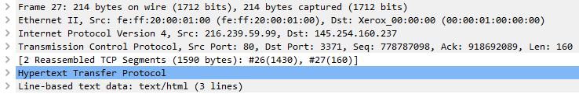

.PCAP Analysis
Wireshark Forensic
In a scenario where our machine has been hacked by an anonymous threat actor, I have been given a .pcap file to analyse in order to determinate what happenend. To do so, I’ve made use of wireshark, a famous network protocol analyzer. The vulnerable machine and the .pcap file are provided by the THM learning platform. I’ve run the wireshark software on a Kali OS using a virtual machine, VM Workstation 16, hosted my own machine. I could connect to the THM networn via OpenVPN. In the second part of the exercise I’ve hacked my way back to the exploited machine, I performed a privilege escalation and eventually I captured a Flag hidden in the fie system.
Outcome
This is one of a series of exercises and studies I have conducted to expand my knowledge in cyber security defence and incident response. At the end of the exercise I was able to read and analyze a simple .pcap file, I have a good understaning of the different traffic, protocols, the multilayer data structure and the informations that is possible to retrieve by them. I’m able to navigate and utilize some of the basic wireshark tools and modules like filters, basic packet dissection, vilsualize TCP and UDP streams etc.. I also strengthened my knowledge in password bruteforcing, backdoor installing and privilege escalation.
What is packet analysis?
Packet capture (PCAP) analysis is the process of obtaining and analyzing individual data packets that travel through your network. PCAP analytics tools allow to consistently record traffic data at multiple OSI layers. In terms of Security Data packets can serve as an important component of network security monitoring. PCAP analysis tools help you to automate and visualize traffic patterns, so you can identify security threats as soon as they arise. For instance, packet capture analysis shows real-time network traffic data that can quickly show a spike in unauthorized activity
Wireshark
Wireshark is a free and open-source packet analyzer. It is used for network troubleshooting, analysis, software and communications protocol development, and education. Originally named Ethereal, the project was renamed Wireshark in May 2006. Wireshark "understands" the structure (encapsulation) of different networking protocols (see picture below). It can parse and display the fields, along with their meanings as specified by different networking protocols. Wireshark uses pcap to capture packets, so it can only capture packets on the types of networks that pcap supports.

Resources
Wireshark - https://www.wireshark.org/
THM - Learning platform - https://tryhackme.com/room/h4cked
Reverse php-reverse - https://www.php.net/manual/en/function.array-reverse.php
Hydra - https://www.kali.org/tools/hydra/
Python script -https://docs.python.org/3/library/pty.html
DnsStuff - https://www.dnsstuff.com/pcap-analysis
VersaCode - https://www.veracode.com/security/rootkit